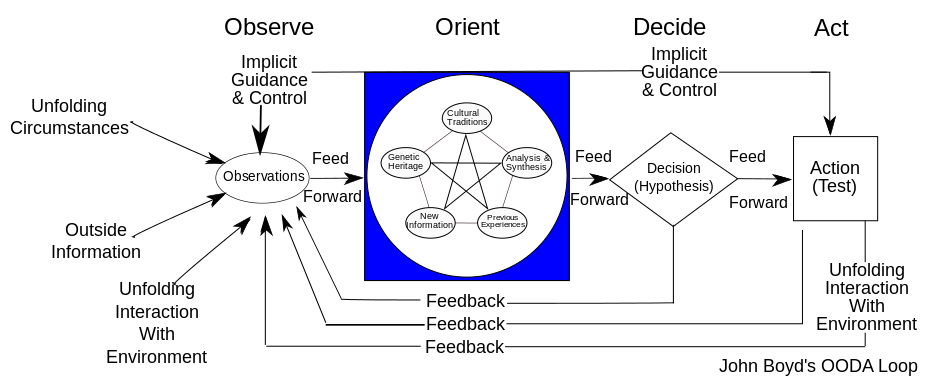
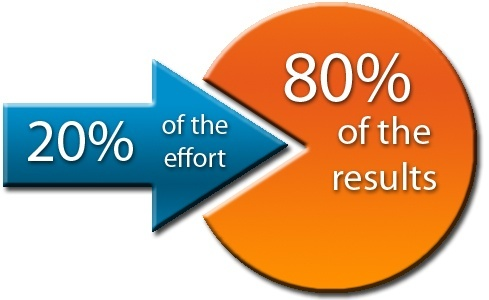
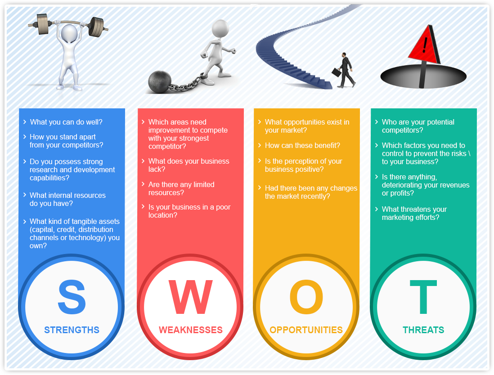
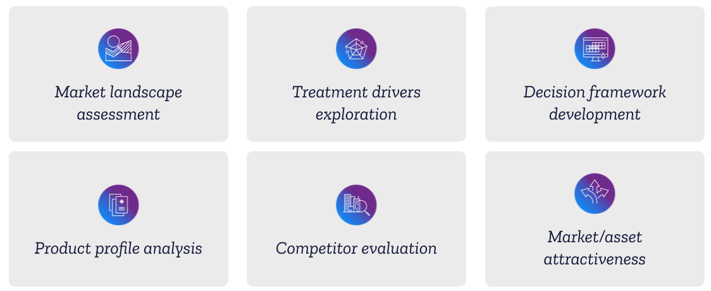

| teachinghow2s.com | Easy to grasp overviews of the theories behind the strategies |
| wikipedia.org | Peter principle: managers rise to the level of their incompetence |
| wikipedia.org | Dilbert principle: companies promote their least-competent employees (generally upto middle mgmt), in order to limit the amount of damage they are capable of doing |
| wikipedia.org | Dunning–Kruger effect: a cognitive bias in which low-ability individuals suffer from illusory superiority, mistakenly assessing their ability as much higher than it really is |
| wikipedia.org | Negative selection: The person on the top, wishing to remain in power, chooses incompetent associates, they must not be competent enough to remove him from power |
| helpguide.org | Effective Communication |
| stackexchange.com | Difference between 'guess' and 'hunch' (example: 'my hunch is that the stock is going to go up in value') |
| helpguide.org | Building the Skills That Can Turn Conflicts into Opportunities |
| helpguide.org | OODA loop refers to the decision cycle of Observe, Orient, Decide, and Act  |
| quora.com | Effective Communication using 80:20 (Pareto) Principle 80% of your conversation revolves around 20% of topic  |
| wikipedia.org | SWOT (Strengths, Weaknesses, Opportunities and Threats) Analysis in structured planning  |
| slideshare.net slideshare.net | Presales : Introduction and Approach |
| whattech.com | Top Ten Presentation Tips for Technology Pre-Sales Professionals |
| onlinecollege.org | Twenty Classic Case Studies of Business |
| quora.com | Some of good lessons learnt in Corporate World |
| emc.com | Pull effect |
| slideshare.net | Difference between Approach - Method - Technique - Procedure |
| deallus.com | Opportunity and Threat Assessment  |
| ngroup.biz | TBP (Transaction Based Pricing) |
| checkify.com | Time and motion based pricing economy |
| nearshore-it.eu | Gain share pricing model |
| projectmanager.com | RAID is an acronym that stands for Risks, Actions, Issues and Decisions |